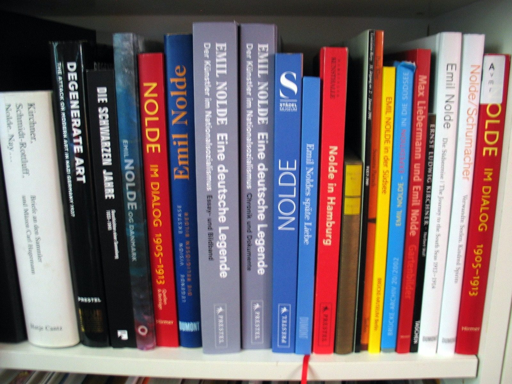

Prolog
Emil Nolde, sky og genert, suppleres på fineste måde af sin udadvendte kone Ada i kampen for at promovere hans kunst, ikke mindst i Det Tredje Rige. Alene Hitlers modvilje redder hans kunst for eftertiden.

Emil Nolde, sky og genert, suppleres på fineste måde af sin udadvendte kone Ada i kampen for at promovere hans kunst, ikke mindst i Det Tredje Rige. Alene Hitlers modvilje redder hans kunst for eftertiden.